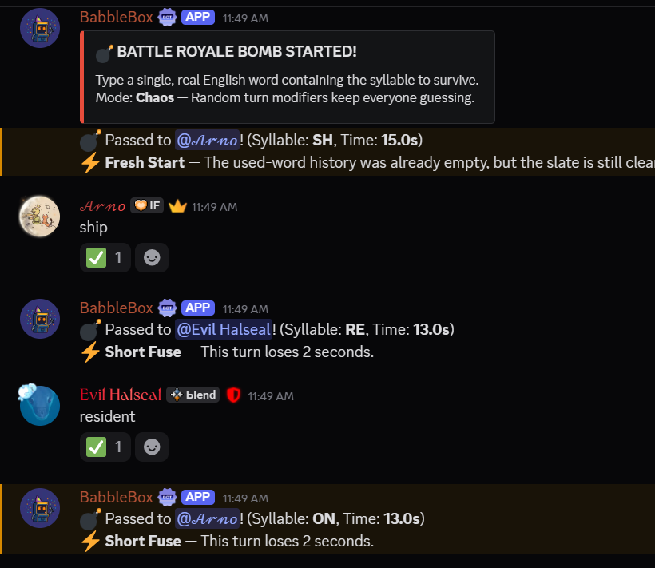
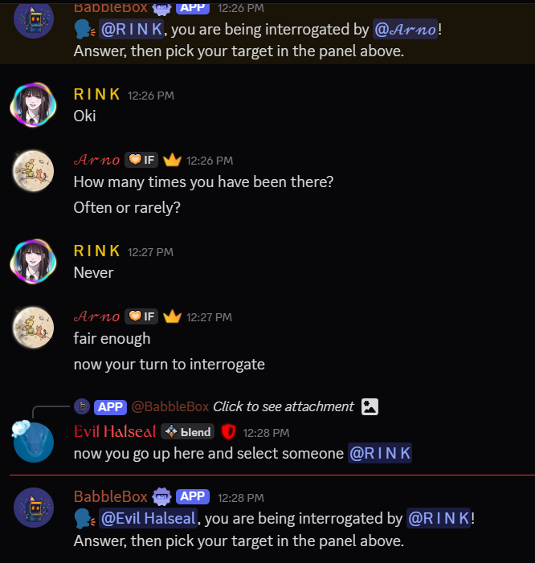

/play opens one clean lobby for Broken Telephone, Exquisite Corpse, Spyfall, Word Bomb, and Pattern Hunt.
Game night
Starts the room fast and keeps the night moving.
Open /play once and Babblebox handles Broken Telephone, Exquisite Corpse, Spyfall, Word
Bomb, and Pattern Hunt from one polished lobby. Pattern Hunt stays mysterious, Word Bomb stays sharp,
and the whole flow still feels native to Discord instead of bolted on.
Pattern Hunt coders need server DMs open before the round starts. That detail belongs on the page because this site is supposed to sell the real product, not smooth over it with abstract marketing.
One entry point, six replayable games
Good party bots remove setup drag. Babblebox puts the whole live-room lane behind one clean lobby instead of spreading it across unrelated commands.
Replay value over novelty filler
Pattern Hunt adds real differentiation, while Broken Telephone, Exquisite Corpse, Spyfall, and Word Bomb keep the room accessible.
Discord-native by design
The product is meant to feel like it belongs in chat: readable, shareable, and quick to scan from desktop or mobile.
Broken Telephone
Exquisite Corpse
Spyfall
Word Bomb
Pattern Hunt

